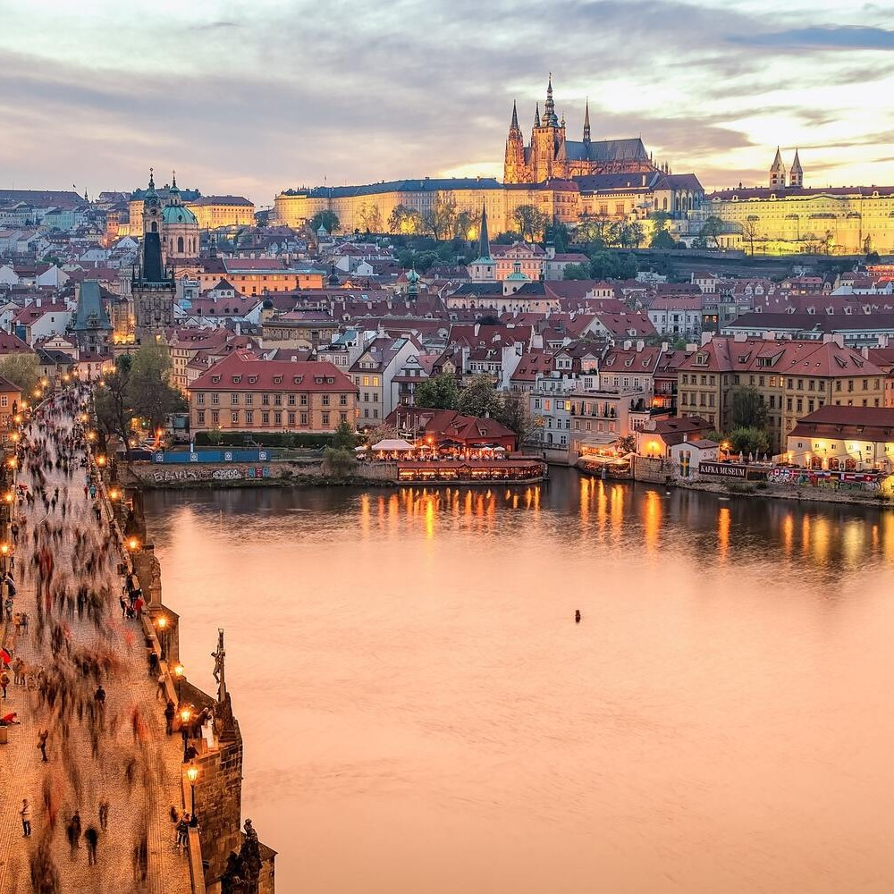

From Athens to Prague: Czechia Tree Frogs Debut After Sudden Move
Today
Today, the PJPL confirmed the relocation of the Greece Chicken Frogs to Prague, Czechia, where the franchise will now be known as the Czechia Tree Frogs. The announcement came in a joint statement issued by the league office and team ownership shortly after the conclusion of the Spring 2025 playoffs, ending months of quiet speculation about the future of one of the PJPL’s original franchises.
Despite a solid fan base in Greece, league and team officials cited financial strain and underperformance as the dual forces behind the decision to move the franchise. According to internal sources, the Athens-based team had faced mounting logistical expenses throughout the past two seasons, with international travel and operational overhead putting stress on the ownership group — a European frog-catching company that had funded the team since its inception in 2024.
“The PJPL is growing rapidly, and with that growth comes challenges,” the official statement read. “After careful review, the Greece Chicken Frogs — in full cooperation with league leadership — have decided to relocate to Prague for improved logistical sustainability and a fresh competitive start.”
Though the team’s attendance figures in Greece were strong, sources say the franchise’s overall financial model wasn’t viable long-term. The relocation is viewed as a preemptive measure to protect the team’s stability as the PJPL continues to expand into a more demanding, travel-heavy competitive structure.
On the court, performance was another lingering issue. The Greece Chicken Frogs finished the Spring 2025 season with a 6–12 record, placing fifth out of seven teams that completed the full season. That finish followed an 8–12 campaign in 2024. While not the weakest in the league, the team consistently struggled to break into the top tier and failed to establish any postseason presence.
Returning player Caje Riess, who has been the face of the franchise since its formation, is expected to remain with the team in Czechia for the Summer 2025 season. Though a skilled competitor, Riess has faced stiff opposition from a deepening talent pool, and some around the league believe the change of scenery may bring a needed spark to his game.
PJPL Commissioner Jeremy Fragrance expressed optimism about the move, calling it “a calculated but necessary decision to support long-term franchise health.” Fragrance emphasized the league’s commitment to keeping all teams competitive while also recognizing the growing challenges of operating in a transnational format.
Still, the decision has not been without its critics. Some longtime fans in Greece expressed disappointment and frustration at the news, with a vocal segment online accusing the league of prioritizing growth over loyalty. No relocation compensation or replacement team for Greece has been announced.
Meanwhile, players across the league appear largely neutral on the change, with many focusing their attention on offseason training and preparations for what is expected to be the most competitive PJPL season yet. The Czechia Tree Frogs are confirmed to compete in Summer 2025, where they will join nine other teams — including newly added Croatia Cobra Chicken — in a fight for playoff positioning.
With a fresh home, a returning player, and renewed organizational focus, Czechia enters the upcoming season looking to prove that relocation isn’t retreat — it’s reinvention.